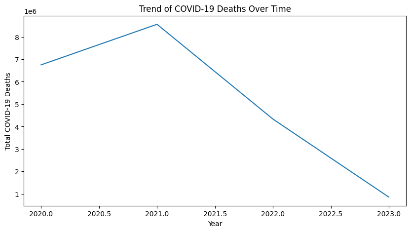

Problem Statement
The project explored U.S. respiratory mortality data to understand how deaths changed over time and how patterns differed across population groups. The main objective was to turn a raw healthcare dataset into analysis-ready outputs that could support clearer interpretation.
Data Preparation
The workflow included reviewing the dataset, handling inconsistencies, preparing fields for analysis, and checking that the cleaned data supported time-series and demographic exploration.
Cleaning
Prepared fields, standardized values, and structured the dataset for visual analysis.
Exploration
Reviewed trends and comparisons to identify where the data showed meaningful differences.
Trend Exploration
The analysis used time-based visuals to look at changes in respiratory mortality and make the overall pattern easier to interpret.

Dashboard View
The Power BI view helped package the findings into a more scannable format, with visuals organized for comparison and discussion.

Key Takeaways
- Cleaning and structuring the data was essential before the trends could be interpreted confidently.
- Time-series visuals helped reveal broad movement in respiratory mortality over the observed period.
- Dashboard design made the analysis easier to scan and discuss with a non-technical audience.
- The project strengthened my understanding of how healthcare data needs context before conclusions are drawn.